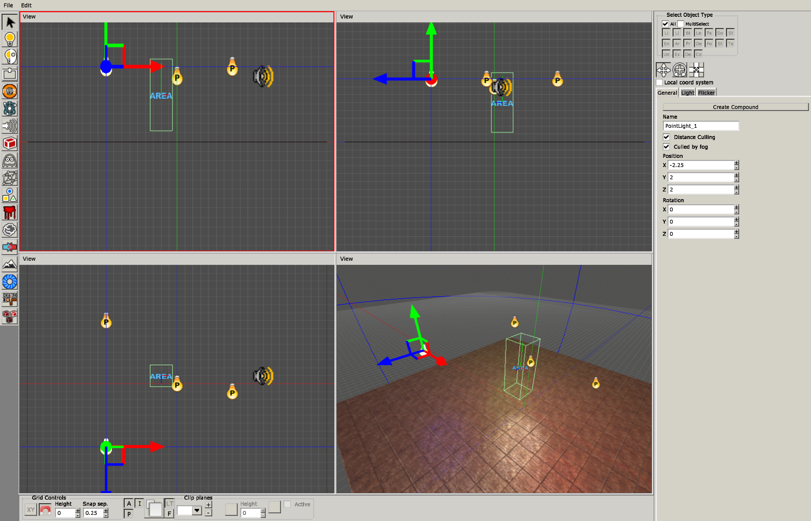
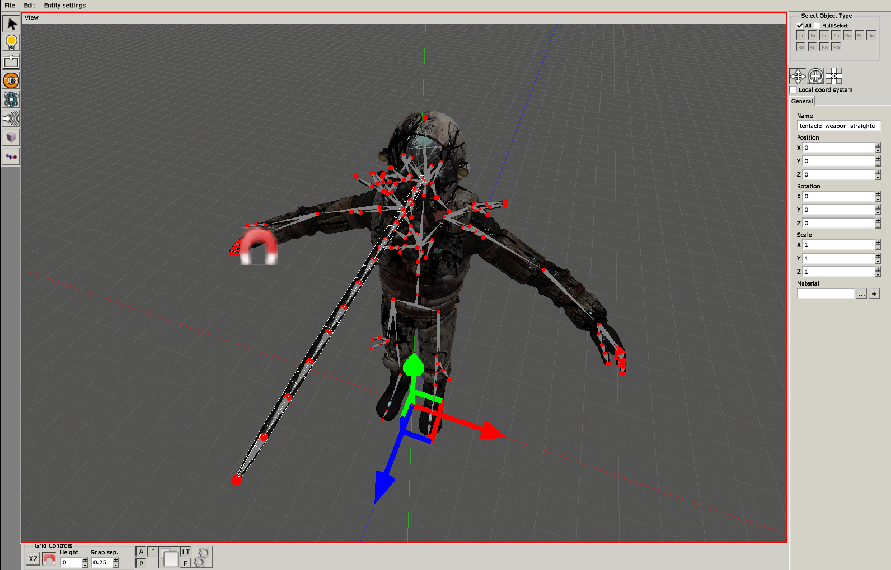
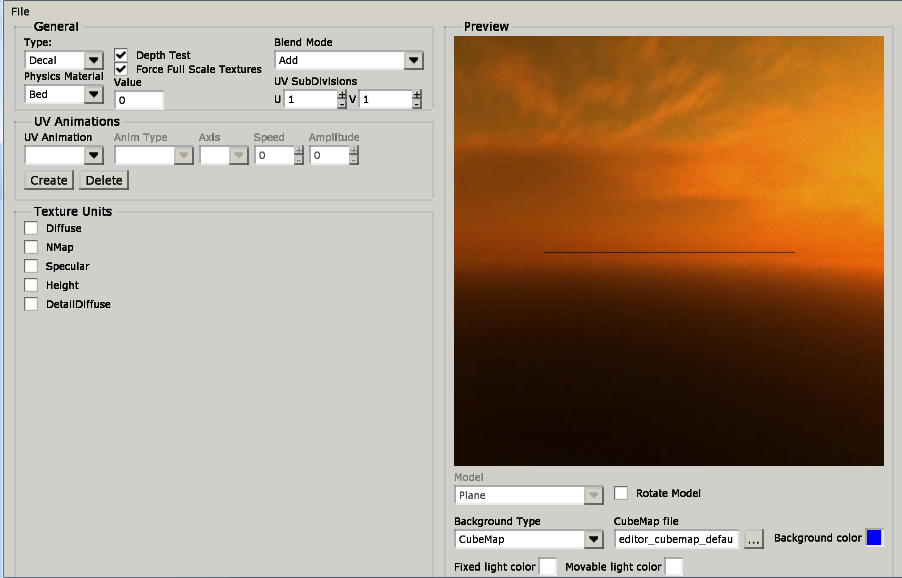
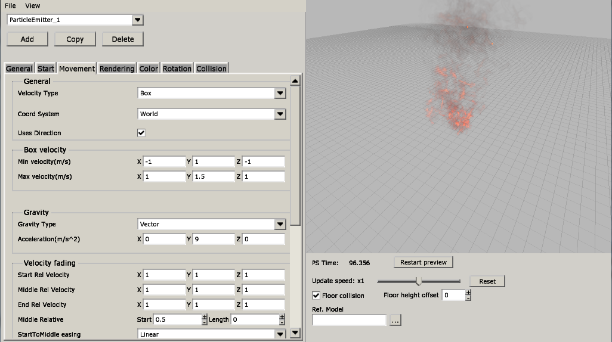

Custom Stories:
Tools for modding SOMA
frictional games
- Helsingborg, Sweden
- Founded 2006
- Thomas Grip and Jens Nilsson
games and tech
| HPL1 | ||||||
| HPL2 | ||||||
| HPL3 |
Penumbra: overture
amnesia: the dark descent
SOMA
Modding soma
Level Editor

Modding soma
Model Editor

Modding soma
Material Editor

Modding soma
Particle Editor

Modding soma
- entry.hpc
- resources.cfg
- maps/00_basics/00_basics.hpm
- config/main_init.cfg
SPOILERS!
- Mild spoilers ahead
- Bits and pieces from the game
- First level in level editor
Demo time!

references
- http://frictionalgames.blogspot.de/2016/03/soma-6-months-later.html
- https://wiki.frictionalgames.com/hpl3/start
- https://www.youtube.com/watch?v=TGhwsa1k1LU
- http://www.adventureclassicgaming.com/index.php/site/interviews/293/
- http://www.frictionalgames.com/site/node/102